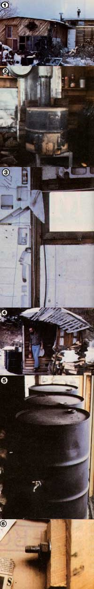

[1] Case pottery studio (on the left) and the bargain dwelling's smaller living quarters (on the right). [2] Rock ballast (next to Bill's homemade stove) helps to ""anchor"" the structure. [3] Cuts in the styrofoam wall serve as shelves for knickknacks. [4] An imaginative, free-form outhouse. [5] Water-filled barrels set behind a large studiio window provide thermal mass. [6] Removable bolts, such as this one, join the 8' x 8' prefabricated walls. Because they can be easily removed, the fasteners make the house portable.